Technical Whitepaper Series
Read in order for full context: architecture -> data model -> performance -> quality gates -> platform roadmap.
Part 3 defined runtime expectations under stress. Part 4 turns those expectations into enforceable delivery controls: quality gates, audit artifacts, and release discipline that survive enterprise scrutiny.
Why this chapter exists after performance and reliability
Performance tuning without governance gates is fragile. Teams eventually bypass good practices under schedule pressure. This chapter shows how CWS converts runtime principles from Part 3 into mandatory gates that are visible in release evidence. Part 5 then closes the loop with stack-level tradeoffs and roadmap boundaries.
1. Gate model: what must pass before release
The gate model is built around risk classes, not checklist vanity. A candidate release is expected to pass at least these dimensions:
- Security regression checks (token handling, transport assumptions, config safety).
- Fault-injection and degraded-mode behavior checks.
- Performance guard checks against baseline envelopes.
- Coverage risk checks focused on changed/high-risk paths.
- Release note quality and traceability checks.

2. Coverage policy: percentage is not enough
A single global coverage number can hide real risk. We track three layers:
- Global trajectory: long-term movement toward higher total coverage.
- Changed-file guard: minimum expectations for touched code in each release wave.
- High-risk budget: explicit budget for uncovered logic in critical modules.
This approach prevents false confidence from broad-but-shallow test suites while still preserving a measurable long-term target.
3. Auditability: every release should explain itself
For enterprise adoption, auditability is a product feature. Release artifacts should allow an external reviewer to answer:
- What changed?
- What user-visible behavior is affected?
- Which gates were executed and what evidence exists?
- What is the rollback or containment plan if post-release anomalies appear?
This is why release notes are treated as controlled artifacts rather than optional summaries. In this repository, release-note quality checks are integrated with pre-push and validation scripts to block empty or placeholder releases.
4. Delivery discipline and environment separation
The delivery model distinguishes code commit cadence from packaging and distribution cadence. Manual release dispatch is deliberate: it keeps package publication behind explicit human review and prevents accidental release storms from routine commits.

Additional discipline points include:
- repeatable dependency installation in release flows;
- separation between backend/docs deploy and installer packaging;
- post-release workspace cleanliness check before declaring completion.
These controls are operationally boring. That is exactly the point.
5. Case: why release-note gate quality matters
In practical operations, weak release notes create a hidden support tax. Teams cannot quickly map regressions to behavior changes, and auditors cannot verify claimed control improvements. By enforcing structured release notes (overview, change list, impact, upgrade path, compare links), release investigation time drops because teams stop reverse-engineering intent from commit history.
This is not documentation polish; it is incident-response acceleration.
6. Security integration with QA gates
Security and QA are merged in one lifecycle:
- token behavior and auth controls are checked alongside functional paths;
- transport assumptions are validated before automation rollout;
- evidence exports are validated for review workflows, not only UI display correctness.
This closes the gap between "secure in theory" and "secure in an operator workflow".
7. Known gaps and practical next actions
- Coverage expansion is a continuing program, not a one-release event.
- Policy files and quality baselines require periodic refresh to stay meaningful.
- Gate outputs are only useful if attached to release artifacts and incident runbooks.
The near-term goal is to keep tightening high-risk uncovered areas while preserving release throughput.
QA governance appendix: turning checks into organizational habit
Engineering teams often have quality checks, but not quality habits. Habit means checks run consistently, outputs are reviewed, and decisions are recorded. To build that habit, align gates with the real release timeline. If a gate can only run after packaging, teams will be tempted to skip it under time pressure. If a gate runs too early without realistic artifacts, it produces false confidence. The practical approach is staged gates: pre-merge checks for logic integrity, pre-release checks for system behavior, and closeout checks for release evidence completeness.
A second habit is explicit risk classification for failed checks. Not every failure should block release, but every failure should have a declared risk level and owner. For example, a formatting mismatch in non-critical docs is low risk, while a missing auth regression test for API endpoints is high risk. The decision to proceed should be documented with rationale, owner, and follow-up deadline. This preserves velocity without normalizing silent risk acceptance.
Third, tie QA outputs to customer-facing confidence statements. If a release note says reliability improved, the supporting evidence should be easy to find in internal gate outputs. This linkage improves both external credibility and internal accountability. Teams stop shipping vague claims because every claim requires proof.
Fourth, rotate gate ownership periodically. When one person owns all gates for too long, blind spots and bottlenecks accumulate. Rotating ownership spreads operational understanding and improves incident resilience. The objective is shared competence, not heroic dependency.
Fifth, review false positives in gates as a first-class quality problem. A noisy gate that triggers often without value trains teams to ignore it. Over time this is worse than no gate because it creates procedural theater. Maintain a quarterly gate quality review: signal-to-noise ratio, incident catch rate, average remediation time, and skipped-check reasons.
Finally, include post-release review as part of QA, not separate from it. Compare expected impact from release notes with observed operational behavior after rollout. This closes the loop and improves future gate calibration. QA without post-release feedback becomes static; QA with feedback becomes a learning system.
Implementation FAQ: making QA governance stick
Q: Why do teams skip gates even when they agree gates matter? Usually because gate timing conflicts with delivery pressure. Move high-value checks earlier and keep release-closeout checks focused on evidence completeness.
Q: How do we balance speed and strictness? Use risk-tiered rules. High-risk failures block by default; medium-risk failures require owner sign-off and follow-up deadline; low-risk failures can proceed with logged rationale.
Q: How do we keep gate outputs useful to support teams? Use stable naming, stable artifact locations, and clear mapping from gate result to customer-visible behavior. Support teams should not parse raw CI logs to understand release quality.
Q: How do we improve trust with enterprise reviewers? Publish concise release evidence summaries and keep deep artifacts available for audit drill-down. Too little detail looks weak; too much unstructured detail looks unreliable.
Q: What does success look like after six months? Fewer emergency rollbacks, faster incident triage, and cleaner release retrospectives where expected impact aligns with observed behavior.
Field notes: sustaining QA quality across release waves
Teams can pass gates and still regress if gate intent is unclear to implementers. We therefore document each gate with two short statements: what risk it controls and what behavior failure usually predicts. This helps engineers treat gates as feedback, not bureaucracy. Another practical rule is to cap open high-risk exceptions. Unlimited exception queues make metrics look manageable while risk silently accumulates. Cap the queue, force explicit prioritization, and review exceptions in the same cadence as release planning.
When incident review happens, tie each incident back to gate history: was there a warning signal, was it waived, and was waiver rationale valid? This loop improves governance quality faster than adding more checks. Better checks plus better waiver discipline usually outperforms check-volume growth.
For enterprise reporting, keep one concise QA evidence packet per release line. Include gate summary, known-risk exceptions, and remediation deadlines. Buyers and auditors do not need raw CI noise; they need traceable control outcomes.
Maturity note: how to read QA metrics without self-deception
Metrics should be interpreted as directional health signals, not absolute guarantees. A rising coverage trend is good, but if escaped defects in high-risk modules stay flat, teams should investigate test quality and scenario depth. A low gate-failure count is good, but if post-release incidents are increasing, the gate set may be blind to the dominant risk path. We recommend a quarterly calibration review that compares gate pass rates, incident taxonomy, and remediation latency in one dashboard. The goal is not to maximize one number; the goal is to reduce operational surprise while preserving release cadence.
Data sources for this chapter
- Release Ledger: public release evidence and change traceability.
- Roadmap: QA and governance track progression.
- Repository scripts and hooks:
scripts/validate_release_notes.py, QA check scripts, and git hooks referenced by release flow documentation.
Next: stack tradeoffs and platform roadmap boundaries
Part 5 closes the series with a direct view of Rust + Tauri tradeoffs, long-term platform constraints, and what remains intentionally out of scope.